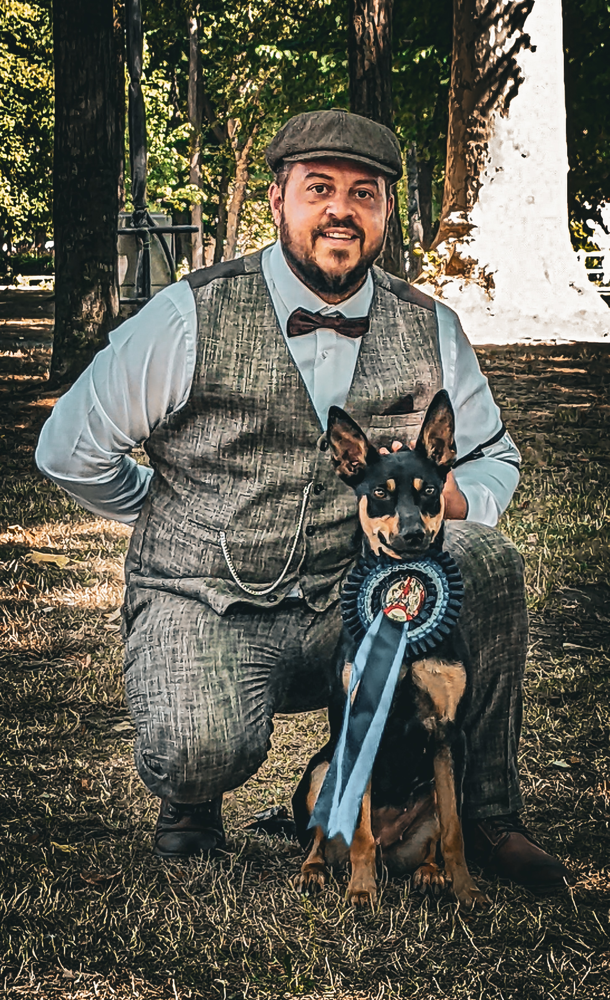

Passionné depuis l'adolescence par le milieu cynophile, j'ai décidé d'arrêter mes études à l'âge de 17 ans pour essayer de faire de ma passion mon métier.
Yohan et Thétis

Formateur et Instructeur cynophile
Yohan et Ringarooma S'nyx

Éducateur Canin et Éleveur
Partir sans bagages ce n'est pas évident mais ..."Avec de la volonté on finit toujours par y arriver !"
Engagé volontaire dans l'armée en tant que parachutiste au 17eme Régiment du génie parachutiste à Montauban, puis par la suite à la Gendarmerie. Je quitte l'armée quelques années plus tard, afin d'être formé en tant que conducteur de chien de garde et de défense. C'est donc en 2007 que j'obtiens mon premier diplôme en tant qu'agent cynophile.
Repéré par un responsable sur un terrain de dressage afin de travailler sur le réseau RATP. J'obtiens une accréditation me permettant de travailler sur les réseaux SNCF et Métropolitain parisien. Je forme en parallèle des agents cynophiles de sécurité privée en Ile de France, (mordant, législation).
Quelques années plus tard, retour aux sources (Basse Normandie), quelques emplois en tant qu'agent cynophile par-ci par là, mais ma soif d'apprendre encore plus sur les chiens et leurs comportements m'a poussé à continuer mon apprentissage et donc de partir en 2010 dans l'Orne à Sées pendant une année. Au cours de ces 10 mois, j'obtiens mon BP Éducateur canin.
Un accident de la voie publique vient arrêter temporairement ma passion fin juillet 2011. Pendant plus d'une année en Hôpital, j'en profite alors pour me documenter sur le comportement canin en lisant beaucoup de livres vétérinaires comportementalistes très connus (J.Dehasse, P.Pageat, C.Beata ...). Mais aussi d'éducateurs - comportementalistes comme (C.Collignon, B.Eaton, T.Rugaas, J.Ortéga ...). J'aide aussi pendant ce temps à la création d'entreprises d'éducation canine.
A l'issue de ma longue convalescence, je deviens instructeur pour la formation de maitres de chien de sécurité privée en 2013 et je décide d'ouvrir mon entreprise, afin de m'épanouir à 100% dans ce beau métier qu'est le conditionnement. De plus, je continue à me former dans les domaines cynophiles quotidiennement.
Prochain objectif DU Relations Homme-Animal à l'université Paris Descartes.